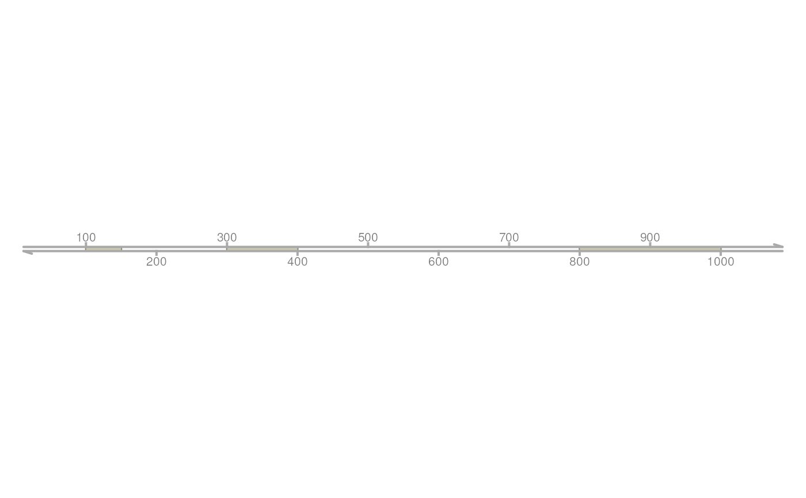
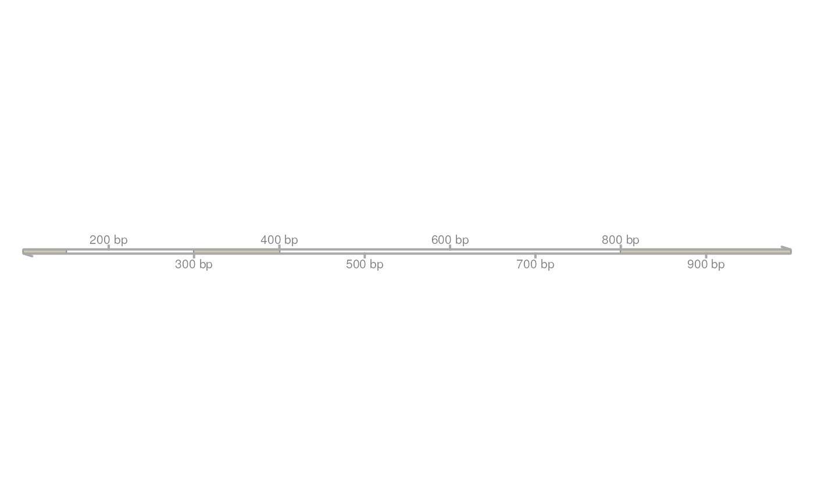
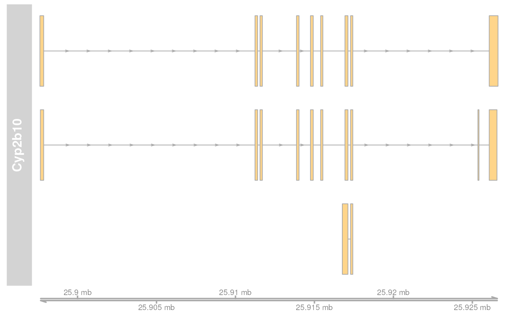
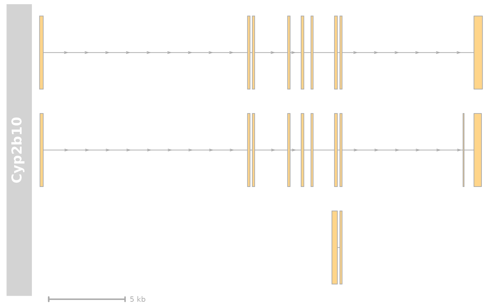
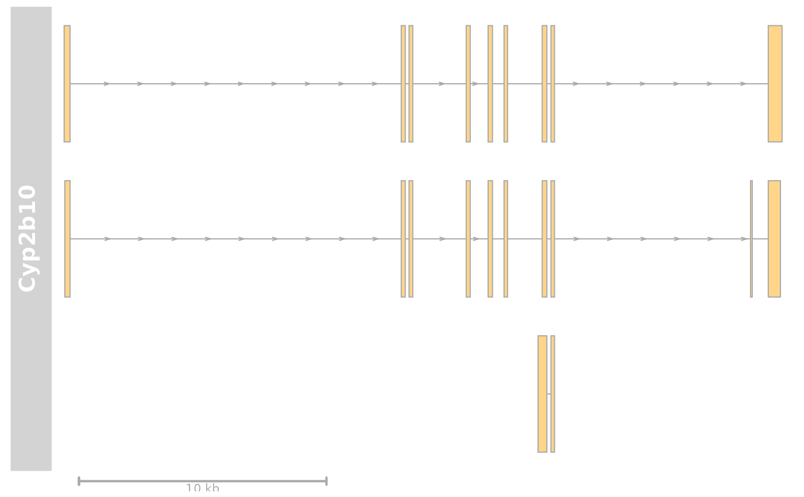

GenomeAxisTrack-class.RdA class representing a customizable genomic axis.
GenomeAxisTrack(range=NULL, name="Axis", id, ...)
| range | Optional |
|---|---|
| name | Character scalar of the track's name used in the title panel when plotting. |
| id | A character vector of the same length as |
| ... | Additional items which will all be interpreted as further
display parameters. See |
Objects can be created using the constructor function
GenomeAxisTrack.
A GenomeAxisTrack can be customized using the familiar display
parameters. By providing a GRanges or IRanges object to
the constructor, ranges on the axis can be further highlighted.\
With the scale display parameter, a small scale indicator can
be shown instead of the entire genomic axis. The scale can either be
provided as a fraction of the plotting region (it will be rounded to
the nearest human readable absolute value) or as an absolute value and
is always displayed in bp, kb, mb or gb units. Note that most display
parameters for the GenomeAxisTrack are ignored when a scale is
used insterad of the full axis. In particular, only the parameters
exponent, alpha, lwd, col, cex,
distFromAxis and labelPos are used.
The return value of the constructor function is a new object of class
GenomeAxisTrack.
range:Object of class GRanges,
highlighted on the axis.
dp:Object of class
DisplayPars, inherited from class
GdObject
name:Object of class "character", inherited
from class GdObject
imageMap:Class "GdObject", directly.
In the following code chunks, obj is considered to be an object of class GenomeAxisTrack.
Exported in the name space:
signature(x="GenomeAxisTrack"): subset the
GRanges object in the range slot. For most
applications, the subset method may be more appropriate. Additional Arguments: i: subsetting incides.obj[1:5]
signature(x="GenomeAxisTrack"): the
start or end coordinates of the track items, or their width in
genomic coordinates. Usage: start(x) end(x) width(x) Examples: width(obj)
signature(x="GenomeAxisTrack"): return the genomic
coordinates for the track as an object of class
IRanges. Usage: range(x) Examples:
signature(x="GenomeAxisTrack"): return the genomic
coordinates for the track along with all additional annotation
information as an object of class GRanges. Usage: ranges(x) Examples: ranges(obj)
signature(x="GenomeAxisTrack"): return a vector of
strand specifiers for all track items, in the form '+' for the
Watson strand, '-' for the Crick strand or '*' for either of the
two. Usage: strand(x) Examples: strand(obj)
signature(x="GenomeAxisTrack"): return all
additional annotation information except for the genomic coordinates
for the track items. Usage: values(x) Examples: values(obj)
signature(x="GenomeAxisTrack"): subset a
GenomeAxisTrack by coordinates and sort if necessary. Usage: subset(x, from, to, sort=FALSE, ...) Additional Arguments: from, to: the coordinates range to subset
to.sort: sort the object after subsetting. Usually
not necessary....: additional arguments are ignored.
signature(x="GenomeAxisTrack"): return the
number of items stored in the ranges slot. Usage: length(x) Examples:
Internal methods:
signature(GdObject="GenomeAxisTrack"): the
workhorse function to plot the object. Usage: drawGD(GdObject, minBase, maxBase, prepare=FALSE,
subset=TRUE, ...) Additional Arguments: minBase, maxBase: the coordinate range to
plot.prepare: run method in preparation or in
production mode.subset: subset the object to the visible region
or skip the potentially expensive subsetting operation....: all further arguments are ignored.Gviz:::drawGD(obj)Gviz:::drawGD(obj, minBase=1, maxBase=100)Gviz:::drawGD(obj, prepare=TRUE,
subset=FALSE)
signature(GdObject="GenomeAxisTrack"):
preprocess the track before plotting. This will collapse
overlapping track items based on the available resolution and
increase the width and height of all track objects to a minimum
value to avoid rendering issues. See collapsing for
details. Usage: collapseTrack(GdObject, diff=.pxResolution(coord="x")) Additional Arguments: diff: the minimum pixel width to display,
everything below that will be inflated to a width of
diff.Gviz:::collapseTrack(obj)
signature(.Object="GenomeAxisTrack"):
initialize the object
signature(object="GenomeAxisTrack"): show a
human-readable summary of the object
Inherited:
signature(x="GenomeAxisTrack", name="character"):
list the value of the display parameter name. See
settings for details on display parameters and
customization. Usage: displayPars(x, name) Examples:
signature(x="GenomeAxisTrack", name="missing"):
list the value of all available display parameters. See
settings for details on display parameters and
customization. Examples:
signature(x="GenomeAxisTrack", name="character"):
alias for the displayPars method. See
settings for details on display parameters and
customization. Usage: getPar(x, name) Examples:
signature(x="GenomeAxisTrack", name="missing"): alias
for the displayPars method. See settings for
details on display parameters and customization. Examples:
signature(x="GenomeAxisTrack", value="list"):
set display parameters using the values of the named list in
value. See settings for details on display
parameters and customization. Usage: displayPars<-(x, value) Examples: displayPars(obj) <- list(col="red", lwd=2)
signature(x="GenomeAxisTrack", value="character"): set
the single display parameter name to value. Note
that display parameters in the GenomeAxisTrack class are
pass-by-reference, so no re-assignmnet to the symbol obj is
necessary. See settings for details on display
parameters and customization. Usage: setPar(x, name, value) Additional Arguments: name: the name of the display parameter to set.
signature(x="GenomeAxisTrack", value="list"): set
display parameters by the values of the named list in
value. Note that display parameters in the GenomeAxisTrack
class are pass-by-reference, so no re-assignmnet to the symbol
obj is necessary. See settings for details on
display parameters and customization. Examples:
signature(GdObject="GenomeAxisTrack"): return
grouping information for the individual items in the track. Unless
overwritten in one of the sub-classes, this usualy returns
NULL. Usage: group(GdObject) Examples:
signature(x="GenomeAxisTrack"): return the value of
the name slot. Usage: names(x) Examples:
signature(x="GenomeAxisTrack", value="character"):
set the value of the name slot. Usage: names<-(x, value) Examples: names(obj) <- "foo"
signature(ImageMap="GenomeAxisTrack"): return the
coordinates from the internal image map. Usage: coords(ImageMap) Examples:
signature(x="GenomeAxisTrack"): return the tags from the
internal image map. Usage: tags(x) Examples:
signature(GdObject="GenomeAxisTrack"): add a
y-axis to the title panel of a track if necessary. Unless
overwritten in one of the sub-classes this usualy does not plot
anything and returns NULL. Usage: drawAxis(x, ...) Additional Arguments: ...: all further arguments are ignored.Gviz:::drawAxis(obj)
signature(GdObject="GenomeAxisTrack"): superpose a
grid on top of a track if necessary. Unless overwritten in one of
the sub-classes this usualy does not plot anything and returns
NULL. Usage: drawGrid(GdObject, ...) Additional Arguments: ...: additional arguments are ignored.Gviz:::drawGrid(obj)
The following display parameters are set for objects of class
GenomeAxisTrack upon instantiation, unless one or more of them
have already been set by one of the optional sub-class initializers,
which always get precedence over these global defaults. See
settings for details on setting graphical parameters
for tracks.
add35=FALSE: Logical scalar. Add 3' to 5' direction
indicators.
add53=FALSE: Logical scalar. Add 5' to 3' direction
indicators.
background.title="transparent": Character scalar.
The background color for the title panel. Defaults to omit the
background.
cex=0.8: Numeric scalar. The overall font expansion
factor for the axis annotation text.
cex.id=0.7: Numeric scalar. The text size for the
optional range annotation.
col="darkgray": Character scalar. The color for the
axis lines and tickmarks.
col.border.title="transparent": Integer or character
scalar. The border color for the title panels.
col.id="white": Character scalar. The text color
for the optional range annotation.
col.range="cornsilk4": Character scalar. The border
color for highlighted regions on the axis.
distFromAxis=1: Numeric scalar. Control the distance
of the axis annotation from the tick marks.
exponent=NULL: Numeric scalar. The exponent for the
axis coordinates, e.g., 3 means mb, 6 means gb, etc. The default
is to automatically determine the optimal exponent.
fill.range="cornsilk3": Character scalar. The fill
color for highlighted regions on the axis.
fontcolor="#808080": Character scalar. The font
color for the axis annotation text.
fontsize=10: Numeric scalar. Font size for the axis
annotation text in points.
labelPos="alternating": Character vector, one in
"alternating", "revAlternating", "above" or "below". The vertical
positioning of the axis labels. If scale is not NULL,
the possible values are "above", "below" and "beside".
littleTicks=FALSE: Logical scalar. Add more fine-grained
tick marks.
lwd=2: Numeric scalar. The line width for the axis
elementes.
lwd.border.title=1: Integer scalar. The border width
for the title panels.
scale=NULL: Numeric scalar. If not NULL a
small scale is drawn instead of the full axis, if the value is
between 0 and 1 it is interpreted as a fraction of the current
plotting region, otherwise as an absolute length value in genomic
coordinates.
showId=FALSE: Logical scalar. Show the optional
range highlighting annotation.
showTitle=FALSE: Logical scalar. Plot a title panel.
Defaults to omit the title panel.
size=NULL: Numeric scalar. The relative size of the
track. Can be overridden in the plotTracks function.
Defaults to the ideal size based on the other track settings.
ticksAt=NULL: Numeric scalar. The exact x-position
for tickmarks (in base-pairs).
Additional display parameters are being inherited from the respective
parent classes. Note that not all of them may have an effect on the
plotting of GenomeAxisTrack objects.
GdObject: alpha=1: Numeric scalar. The transparency for
all track items.alpha.title=NULL: Numeric scalar. The transparency
for the title panel.background.legend="transparent": Integer or
character scalar. The background color for the legend.background.panel="transparent": Integer or
character scalar. The background color of the content panel.cex.axis=NULL: Numeric scalar. The expansion
factor for the axis annotation. Defaults to NULL, in
which case it is automatically determined based on the
available space.cex.title=NULL: Numeric scalar. The expansion
factor for the title panel. This effects the fontsize of both
the title and the axis, if any. Defaults to NULL,
which means that the text size is automatically adjusted to
the available space.col.axis="white": Integer or character scalar.
The font and line color for the y axis, if any.col.frame="lightgray": Integer or character
scalar. The line color used for the panel frame, if
frame==TRUEcol.grid="#808080": Integer or character scalar.
Default line color for grid lines, both when type=="g"
in DataTracks and when display parameter
grid==TRUE.col.line=NULL: Integer or character scalar.
Default colors for plot lines. Usually the same as the global
col parameter.col.symbol=NULL: Integer or character scalar.
Default colors for plot symbols. Usually the same as the
global col parameter.col.title="white" (Aliases: fontcolor.title):
Integer or character scalar. The border color for the title panelscollapse=TRUE: Boolean controlling whether to
collapse the content of the track to accomodate the minimum
current device resolution. See collapsing for
details.fill="lightgray": Integer or character scalar.
Default fill color setting for all plotting elements, unless
there is a more specific control defined elsewhere.fontface=1: Integer or character scalar. The
font face for all text, unless a more specific definition exists.fontface.title=2: Integer or character scalar.
The font face for the title panels.fontfamily="sans": Integer or character scalar.
The font family for all text, unless a more specific definition
exists.fontfamily.title="sans": Integer or character
scalar. The font family for the title panels.frame=FALSE: Boolean. Draw a frame around the
track when plotting.grid=FALSE: Boolean, switching on/off the plotting
of a grid.h=-1: Integer scalar. Parameter controlling the
number of horizontal grid lines, see panel.grid
for details.lineheight=1: Numeric scalar. The font line
height for all text, unless a more specific definition exists.lty="solid": Numeric scalar. Default line type
setting for all plotting elements, unless there is a more
specific control defined elsewhere.lty.grid="solid": Integer or character scalar.
Default line type for grid lines, both when type=="g"
in DataTracks and when display parameter
grid==TRUE.lwd.grid=1: Numeric scalar. Default line width
for grid lines, both when type=="g" in DataTracks
and when display parameter grid==TRUE.lwd.title=1: Integer scalar. The border width
for the title panelsmin.distance=1: Numeric scalar. The minimum
pixel distance before collapsing range items, only if
collapse==TRUE. See collapsing for details.min.height=3: Numeric scalar. The minimum range
height in pixels to display. All ranges are expanded to this
size in order to avoid rendering issues. See collapsing
for details.min.width=1: Numeric scalar. The minimum range
width in pixels to display. All ranges are expanded to this
size in order to avoid rendering issues. See collapsing
for details.reverseStrand=FALSE: Logical scalar. Set up the
plotting coordinates in 3' -> 5' direction if TRUE.
This will effectively mirror the plot on the vertical axis.rotation=0: The rotation angle for all text
unless a more specific definiton exists.rotation.title=90 (Aliases: rotation.title):
The rotation angle for the text in the title panel. Even
though this can be adjusted, the automatic resizing of the
title panel will currently not work, so use at own risk.showAxis=TRUE: Boolean controlling whether to
plot a y axis (only applies to track types where axes are
implemented).v=-1: Integer scalar. Parameter controlling the
number of vertical grid lines, see panel.grid
for details.
GRanges
IRanges
panel.grid
## Construct object axTrack <- GenomeAxisTrack(name="Axis", range <- IRanges(start=c(100, 300, 800), end=c(150, 400, 1000))) # \dontshow{ ## For some annoying reason the postscript device does not know about ## the sans font if(!interactive()) { font <- ps.options()$family displayPars(axTrack) <- list(fontfamily=font, fontfamily.title=font) } # } ## Plotting plotTracks(axTrack, from=0, to=1100)#> [1] "Axis"names(axTrack) <- "foo" ## Subsetting and splitting subTrack <- subset(axTrack, from=0, to=500) length(subTrack)#> [1] 2subTrack[1]#> Genome axis 'foo' #> There are annotated axis regions: #> GRanges object with 1 range and 0 metadata columns: #> seqnames ranges strand #> <Rle> <IRanges> <Rle> #> [1] dummy 100-150 * #> ------- #> seqinfo: 1 sequence from an unspecified genome; no seqlengths#> $`1` #> Genome axis 'foo' #> There are annotated axis regions: #> GRanges object with 2 ranges and 0 metadata columns: #> seqnames ranges strand #> <Rle> <IRanges> <Rle> #> [1] dummy 100-150 * #> [2] dummy 300-400 * #> ------- #> seqinfo: 1 sequence from an unspecified genome; no seqlengths #> #> $`2` #> Genome axis 'foo' #> There are annotated axis regions: #> GRanges object with 1 range and 0 metadata columns: #> seqnames ranges strand #> <Rle> <IRanges> <Rle> #> [1] dummy 800-1000 * #> ------- #> seqinfo: 1 sequence from an unspecified genome; no seqlengths #>#> [1] 100 300 800end(axTrack)#> [1] 150 400 1000width(axTrack)#> [1] 51 101 201strand(axTrack)#> [1] "*" "*" "*"range(axTrack)#> IRanges object with 3 ranges and 0 metadata columns: #> start end width #> <integer> <integer> <integer> #> [1] 100 150 51 #> [2] 300 400 101 #> [3] 800 1000 201ranges(axTrack)#> GRanges object with 3 ranges and 0 metadata columns: #> seqnames ranges strand #> <Rle> <IRanges> <Rle> #> [1] dummy 100-150 * #> [2] dummy 300-400 * #> [3] dummy 800-1000 * #> ------- #> seqinfo: 1 sequence from an unspecified genome; no seqlengths## Annotation values(axTrack)#> data frame with 0 columns and 3 rows#> NULL#> NULLtags(axTrack)#> NULLcoords(axTrack)#> x1 y1 x2 y2 #> 1 13.75372 227.4 40.22553 276.6 #> 2 119.64095 227.4 172.58457 276.6 #> 3 384.35905 227.4 489.71685 276.6tags(axTrack)#> $title #> 1 2 3 #> "1" "2" "3" #> #> $start #> 1 2 3 #> "100" "300" "800" #> #> $end #> 1 2 3 #> "150" "400" "999" #>## adding an axis to another track data(cyp2b10) grTrack <- GeneRegionTrack(start=26682683, end=26711643, rstart=cyp2b10$start, rends=cyp2b10$end, chromosome=7, genome="mm9", transcript=cyp2b10$transcript, gene=cyp2b10$gene, symbol=cyp2b10$symbol, name="Cyp2b10", strand=cyp2b10$strand) plotTracks(list(grTrack, GenomeAxisTrack()))